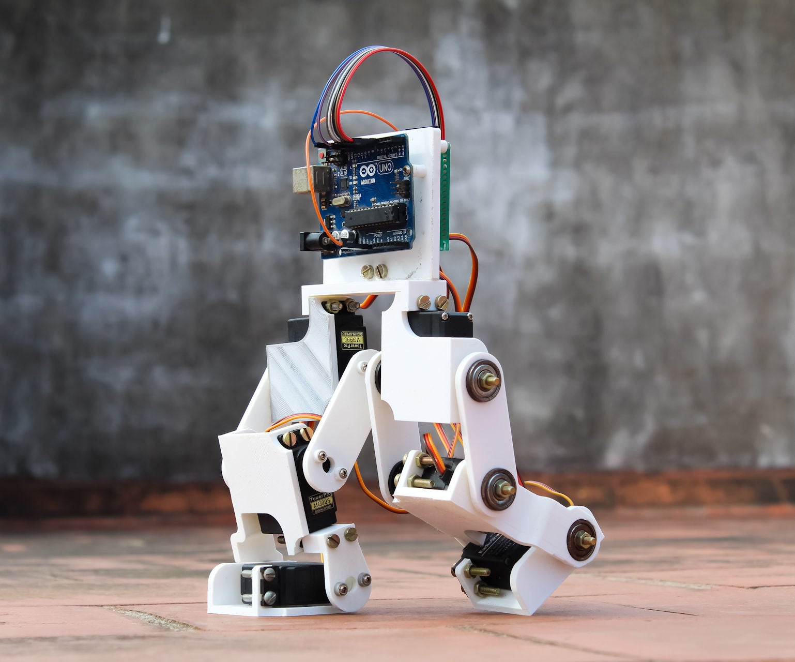
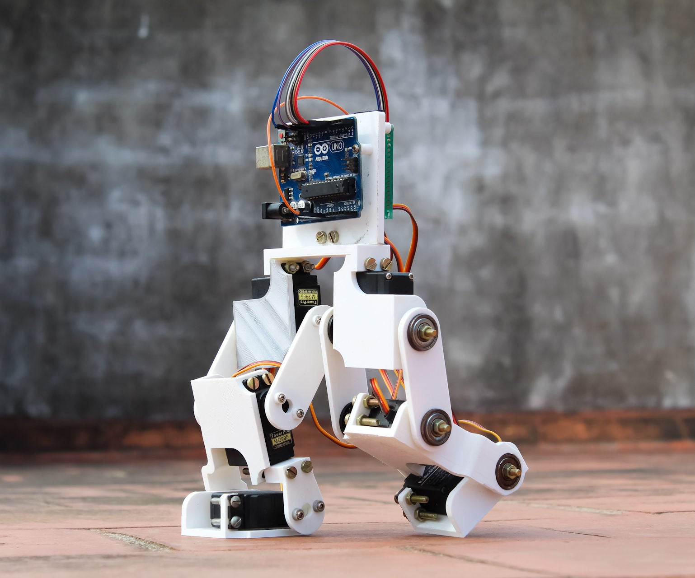

This Web Site Provides Informaton about Single Board Micro-Controllers such as Arduino and Nodemcu which are Used to Create Designs in Robotics and IOT , As well as Infromation on Sensors and Modules used in Robotics and IOT Designs and Some Simple Projects can do using thease Boards, Sensors and Modules.
Arduino
Arduino is an open-source electronics platform based on easy-to-use hardware and software. Arduino boards are able to read inputs and turn them into output - activating a motor, turning on an LED, publishing something online....
NodeMCU
NodeMCU is an open source firmware for which open source prototyping board designs are available. The name "NodeMCU" combines "node" and "MCU" (micro-controller unit).The term "NodeMCU" strictly speaking refers to the firmware....
Sensors & Modules
Sensors and modules (having extra electronic circuitry along with sensor) are Electronic devices that detect and respond to some type of input from the physical environment....
Projects
In this field you can see some projects created using Arduino boards. thease projects are able easy to create with little programming knowledge
 



{kind=link}